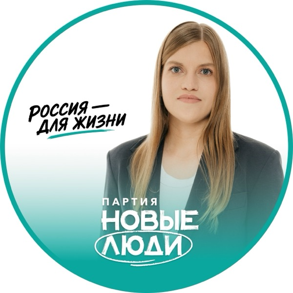

01
Студенческий обмен
С гарантией трудоустройства и стажировками
Новые люди · кандидат в депутаты
Соединяю людей, идеи и ресурсы — чтобы проекты становились делами.

Коротко и по делу

Инвестиции, общественные проекты и помощь бизнесу в Китае.
СвязатьсяМасштабные проекты и «министерство добрых дел»
Готовлюсь к нормативу по лыжным гонкам
Крупные блоки — что делаю

С гарантией трудоустройства и стажировками
Барнаул · Новосибирск · Белокуриха
Город-побратим
Цифра для быстрых решений на местах
Беспилотники для гражданских задач
Язык + административный ресурс — снимаю барьеры

Член партии. Акцент сайта — на Виктории; официальная программа партии — по ссылкам.
Проекты, общественная работа, сотрудничество — напишите в VK.